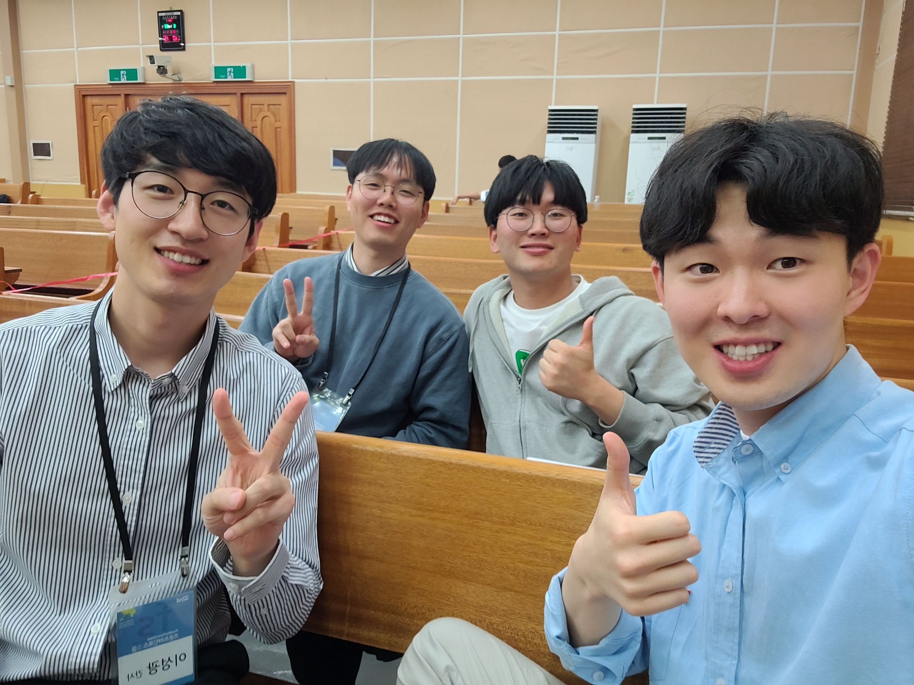
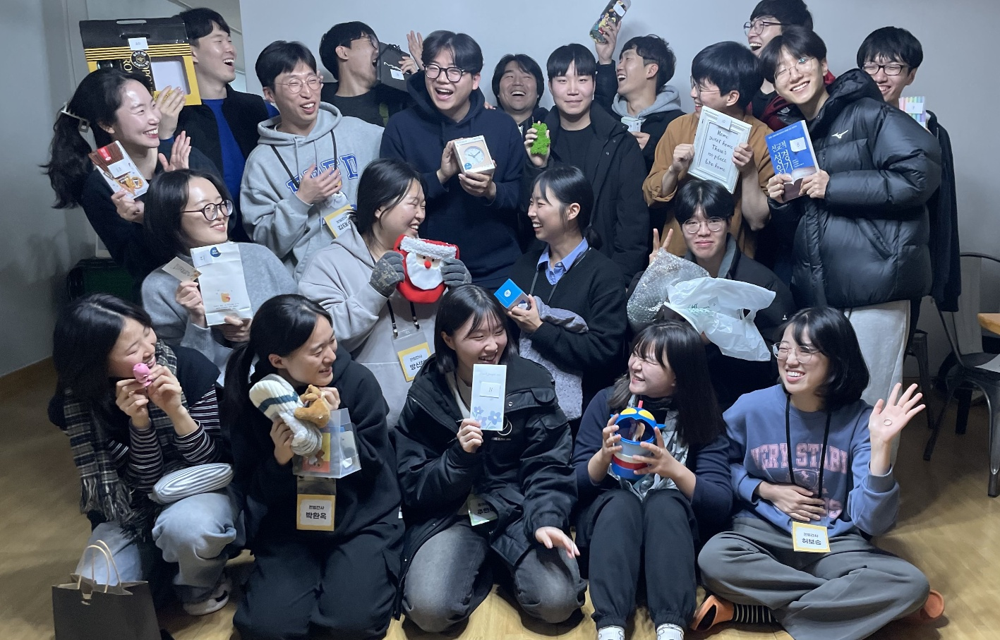
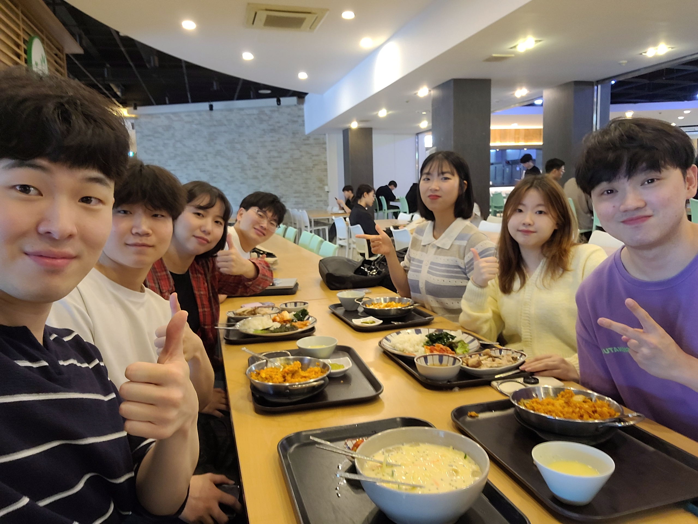

단기
나누고 싶은 소식이 있습니다. 이번에 이스라엘 안에 있는 베두인 민족을 섬기기 위해 2주간(6/22~7/5) 단기선교를 갑니다. 학창시절에 공부 열심히 하셨다면 ㅎㅎ, 아마 베두인이라는 단어가 친숙하실 수 있습니다. 베두인은 ＂사막에 사는 자＂ 라는 뜻입니다. 이스라엘 베두인은 네게브 지역에 거주하는데, 네게브 광야를 집 삼아서 유목생활을 하며 낙타와 양을 데리고 다니는 아랍인입니다. 하지만 이스라엘 독립 이후, 이들은 자신들의 집인 광야를 떠나야 했고 많은 것을 잃어버렸습니다. 억울하게 삶의 터전을 빼앗겨서 생존이 쉽지 않은 상황이지만, 이스라엘 뿐 아니라 국제사회에도 소외되어 누구도 이들을 돕는 자가 없습니다. 전하는 이가 없기에, 복음도 듣지 못하고 소망 없이 살아가는 이들을 보면 안타까운 마음이 듭니다. 하지만 바쁜 일상 가운데 매일 때면 그 마음도 길게 지속되지 못하고, 냉담한 마음을 가지기도 하는 것 같습니다.
복음을 전하러 단기선교를 나가고, 기도로 동참하는 일이 쉽지 않게 느껴질때면, 하나님이 그냥 저 민족들에게 홀로 주권적으로 일하시면 안 되나 생각이 들기도 합니다. 이런 인간적인 생각이 우리 안에 있지만, 이와는 다른 하나님의 생각과 마음을 보게 하는 말씀이 있습니다.

<같은 조 훈련생들과 함께>
마가복음 9:17-27
17 무리 중의 하나가 대답하되 선생님 말 못하게 귀신 들린 내 아들을 선생님께 데려왔나이다
..
19 대답하여 이르시되 믿음이 없는 세대여 내가 얼마나 너희와 함께 있으며 얼마나 너희에게 참으리요 그를 내게로 데려오라 하시매
20 이에 데리고 오니 귀신이 예수를 보고 곧 그 아이로 심히 경련을 일으키게 하는지라 그가 땅에 엎드러져 구르며 거품을 흘리더라
21 예수께서 그 아버지에게 물으시되 언제부터 이렇게 되었느냐 하시니 이르되 어릴 때부터니이다
22 귀신이 그를 죽이려고 불과 물에 자주 던졌나이다 그러나 무엇을 하실 수 있거든 우리를 불쌍히 여기사 도와 주옵소서
23 예수께서 이르시되 할 수 있거든이 무슨 말이냐 믿는 자에게는 능히 하지 못할 일이 없느니라 하시니
24 곧 그 아이의 아버지가 소리를 질러 이르되 내가 믿나이다 나의 믿음 없는 것을 도와 주소서 하더라
25 예수께서 무리가 달려와 모이는 것을 보시고 그 더러운 귀신을 꾸짖어 이르시되 말 못하고 못 듣는 귀신아 내가 네게 명하노니 그 아이에게서 나오고 다시 들어가지 말라 하시매
26 귀신이 소리 지르며 아이로 심히 경련을 일으키게 하고 나가니 그 아이가 죽은 것 같이 되어 많은 사람이 말하기를 죽었다 하나
27 예수께서 그 손을 잡아 일으키시니 이에 일어서니라
본문은 지난 기도편지에서도 나누었던, 귀신 들린 아이의 아버지와 예수님의 이야기가 담긴 말씀입니다. 말씀을 보면 이해하기 어려운 부분이 있는 것 같습니다. 20절의 상황을 보면 아이가 지금 땅을 구르며 경련을 일으키는 심각한 상황입니다. 입에 거품까지 물 정도면, 당장 조치를 해야만 할 정도로 위급한 상황임을 알 수 있습니다. 당장 곧 아이가 죽을 것 같은 긴박한 상황에서, 예수님은 아이를 바로 고쳐주시지 않으시고 아버지와 대화하십니다. 가장 먼저, 도움이 당장 필요한 아이를 고쳐주시는게 순서일 것 같은데 예수님은 아버지와 대화하십니다. 예수님이 의사처럼 환자 정보를 몰라서 진찰하기 위해서일까요? 하지만 이미 예수님은 아이를 잘 아십니다. 본문의 17절을 보면 아버지는 아이가 말 못하게 귀신들렸다고 이야기하지만, 25절에 예수님은 아이에게 말 못하고 못 듣는 귀신이 들렸음을 이야기하십니다. 못 듣게 하는 귀신이 들린 아이의 아픔을 아버지는 모르지만, 예수님은 알고 계시는 것입니다. 예수님은 아버지가 아이의 아픔을 아는 것보다 더 깊게 아이를 알고 계시는데, 왜 이 긴급한 순간에 예수님은 아버지와 대화를 이어가실까요? 예수님 스스로 빠르게 아이를 고쳐주시는 게 좋아 보이기에, 이런 질문이 들게 됩니다.
본문의 19절을 보면 힌트가 있는 것 같습니다. 예수님은 그 현장으로 가셔서, 믿음이 없는 세대라고 책망하고 계십니다. 그 누구도 예수님이 아이를 살릴 수 있다는 믿음을 드리지 않고 있다는 것입니다. 지금 현장에 아버지조차도 믿음이 꺾여있습니다. 이미 기대감을 가지고 제자들에게 부탁했지만, 그들이 고치지 못했기 때문입니다. 아버지는 간절한 소망을 가지고 나아왔지만, 다시 실패를 마주합니다. 이러한 상황에서 아버지는 예수님을 향한 믿음보다는 낙담의 마음이 더욱 커져 있습니다. 이런 아버지를 안타까운 마음으로 바라보시며, 예수님은 아버지와 대화하시면서 믿음의 상호작용을 하십니다. 오히려 몸을 아이가 아닌 아버지께 돌려서 그 안에 있는 작은 믿음을 일으키십니다. 예수님은 믿음을 통해 역사하시기에, 그분의 애통하는 마음은 아이에게 향해있을지언정, 그분의 얼굴과 몸은 아이를 대신해서 믿음을 드릴 수 있는 아버지를 향해있습니다. 아이를 살리기 위해서 아버지에게 집중하시는 예수님의 모습을 보게 됩니다.

<학생식당에서 동아리원들과>
아이를 대하시는 예수님과 같이, 복음이 없는 열방의 민족, 베두인 민족이 구원을 얻기 위해서 그들을 대신해서 믿음을 드릴 자들을 기다리고 계십니다. 하나님은 교회에게 자유의지를 주시고, 교회의 믿음과 순종을 통해서 역사하십니다. 우리의 작은 믿음과 순종이 하나님의 구원을 드러내도록 그분은 과분한 권세를 우리에게 주신 것 같습니다. 그렇기에 하나님은 복음 없이 죽어가는 수많은 민족을 향해 애통해하는 마음을 가지시면서도, 그들을 위해 믿음을 드려 기도하고 작은 순종을 드릴 수 있는 우리에게 몸을 돌리시고 그분의 얼굴을 보이실 것 같습니다. 커다란 믿음은 아니더라도, 오히려 믿음을 간구하는 아버지의 작은 믿음의 걸음을, 주님은 기다리셨다는 듯이 받으시고 생명의 일을 행하십니다.
아무도 믿음을 드리지 못하는 본문의 상황 앞에서 19절에 예수님은 격양되신 것처럼 보입니다. 19절 - "..내가 얼마나 너희와 함께 있으며 얼마나 너희에게 참으리요.." 죽어가는 아이 앞에서 그분의 마음은 결코 평안하기 힘들었던 것 같습니다. 그 아이를 살리기 위해 누군가의 믿음이 필요하기에, 그 믿음을 찾고자 하는 애타는 주님의 마음이 보입니다. 그러나 본문에 무리들은 예수님과 대비되는 냉담한 마음을 보여줍니다. 이 무리들은 아이가 사는 것에는 별로 관심이 없어 보입니다. 26절을 보면 예수님이 귀신을 쫓으시고 아이를 구해주셨는데, 무리들은 아이를 바라보며 죽었다고 이야기합니다. 현장에 아이의 아버지가 함께 있는데도 죽었다고 이야기하는 것입니다. 실제로 아이가 죽었다 하더라도 "아이가 죽었어,
" 이런 말들은 정말 아이를 위한, 아버지를 위한 마음이 조금이라도 있다면 함부로 못 할 것 같습니다.
아이가 숨을 쉬는지 가까이서 보기만 해도, 심장이 뛰는지 손만 데어봐도 아이가 죽었는지 아닌지는 알 수 있습니다. 하지만 무리 중에서 그 누구도 그렇게 하지 않고 멀리서 이 문제를 큰 관심 없이 바라보고 있습니다. 무리에게 이 아이의 아픔은 안타까운 일도 아니고, 신기한일 정도밖에 안되는 것 같습니다. 그저 매일 살아가는 일상 가운데, 이 사건은 무리들에게 그저 흥미와 신기한 사건 정도인 것 같습니다. 아이를 살리고자 하는 마음도 없고, 어떤 믿음이나 행동도 하지 않고 냉담한 마음으로 멀찍이서 구경만 합니다. 그래 놓고는 아이가 죽었다는, 아무 생명이 되지 않는 말뿐입니다.

<학생식당에서 학생간사들과>
베두인 민족과, 절망스러운 열방의 현실들을 바라보면서, 저의 마음이 이 무리와 같을 때가 있음을 봅니다. 바쁜 일상에 매여서, 열방의 아픈 소식을 너무나 쉽게 넘기곤 합니다. 저들을 위해 기도해야지 하면서, 내 유익과 만족에 관련된 것들만 마음을 쓰고 있는 모습을 봅니다.
저와 우리 모두가, 본문에 나오는 무리가 아니라 아버지가 되기를 소망합니다. 하나님의 애통해하시는 마음 앞에서, 한순간의 경험과 흥미로 넘어가는 무리와 같은 자가 아니라, 아이의 아버지처럼 부족하지만 작은 믿음과 순종으로 주님께 나아가는 자들이 되기를 원합니다. 우리의 작은 믿음을 통해서, 예수님이 아이를 살리셨듯이, 베두인과 열방의 민족 가운데 예수님의 생명의 구원이 선포될 것입니다. 그들을 구원하시기를 애타도록 원하시는 주님께서, 우리의 작은 믿음과 순종을 기다리셨다는 듯이 받으셔서 큰 능력과 사랑을 흘려보내실 것을 믿습니다. 베두인을 향한 단기선교의 여정 가운데 기도와 마음으로 함께해 주시기 부탁드립니다.
 <한동대에서 찍은 꽃..ㅎ>
<한동대에서 찍은 꽃..ㅎ>

 <베두인 기도편지>
<베두인 기도편지>